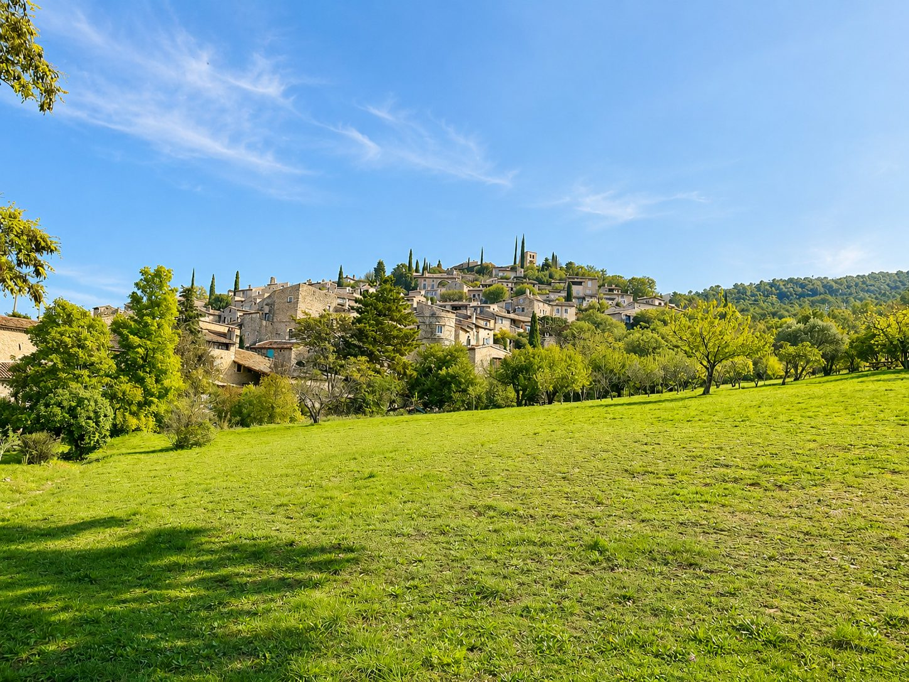

Op ongeveer 50 minuten van Les Cabritas is Mirmande een van de Mooiste Dorpen van Frankrijk, hoog boven het Rhônedal. Met zijn stenen straatjes en weidse uitzichten is het een bijzondere plek voor een middag rustig slenteren.

Een kunstenaarsdorp hoog boven de Rhône
De charme van Mirmande zit in zijn smalle straatjes, stenen huizen en oude deuren die eeuwen geschiedenis vertellen. Het dorp ligt op een heuvel en kijkt uit op een van de mooiste panorama's over het Rhônedal; het trekt al lang schilders aan, betoverd door het licht en de ongerepte sfeer.
Een artistieke reputatie sinds de jaren 1920
Vanaf de jaren 1920 vestigde de kubistische schilder André Lhote zich in Mirmande en richtte er een schilderacademie op die talrijke kunstenaars aantrok en hielp het dorp te redden van geleidelijke ontvolking. Nog altijd heeft Mirmande die sfeer van een openluchtatelier, tussen galeries en zorgvuldig gerestaureerde kunstenaarshuizen.
Goed om te weten voor uw bezoek
Neem stevige schoenen mee voor de steile straatjes van het dorp, waarvan het centrum autovrij is. Mirmande bezoekt u in een korte halve dag, makkelijk te combineren met Montélimar of de Provençaalse Drôme voor een volle dag uit in de omgeving.
Praktische informatie vanuit Les Cabritas
- Afstand vanaf Flaviac: ongeveer 50 min rijden
- Beste periode: lente tot herfst
- Ideaal voor: karaktervolle dorpen, wandelen, fotografie
Zin om Mirmande te ontdekken vanuit uw vakantiehuis in de Ardèche?
Les Cabritas verwelkomt u in Flaviac, in het hart van de Ardèche, voor een comfortabel verblijf met privézwembad, vlak bij de mooiste plekken van de streek.
Beschikbaarheid bekijken